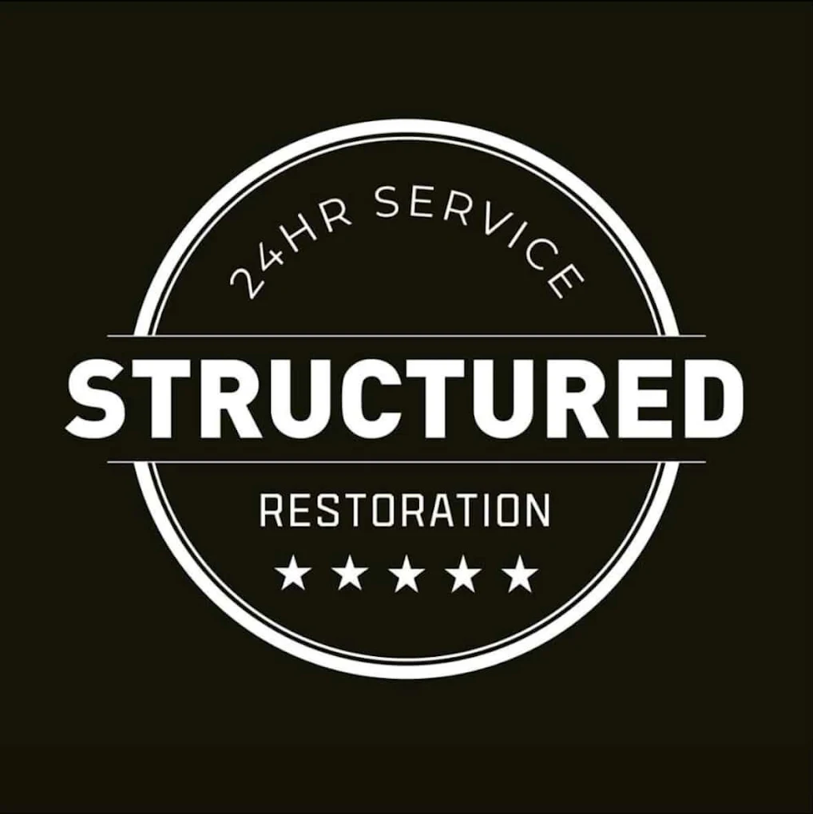

B2B Restoration Response Strategy
This scratch page explores how restoration teams can build stronger partnerships with facility managers through faster response, clearer communication, and reliable project execution.

Partnership Development Process
- Prospecting and Qualification
- Identify properties with frequent water-loss exposure.
- Map decision-makers and response expectations.
- Discovery Conversations
- Understand service gaps in current vendor relationships.
- Define communication cadence and escalation paths.
- Launch and Performance Tracking
- Deploy response protocol and document SLAs.
- Review claim trends and adjust staffing models.
Industry Learning Video
Live Tableau: Property Insurance Claims Analysis

Small Web App
The interactive app is on its own single page, as required.
Launch the Response Cost Simulator